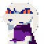
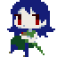

7 |
Les personnages |
 |
|
 Vous allez vite faire connaissance avec les différents habitants de l'île Mimiga. Certains d'entre eux sont d'emblée avenants, et d'autres beaucoup moins. Vous allez vite faire connaissance avec les différents habitants de l'île Mimiga. Certains d'entre eux sont d'emblée avenants, et d'autres beaucoup moins.
 Le personnage principal ne se souvient ni de son nom ni d'où il vient. Lors de son périple, il en apprendra plus sur son passé. Si vous vous débrouillez assez bien, il sauvera ses amis les mimiga. Le personnage principal ne se souvient ni de son nom ni d'où il vient. Lors de son périple, il en apprendra plus sur son passé. Si vous vous débrouillez assez bien, il sauvera ses amis les mimiga.
Appelé "numéro un" au village mimiga, titre cédé par son prédécesseur Arthur. Il a pour devoir de s'occuper des mimigas; il n'a pas l'air très commode aux premiers abords, mais il a un bon fond.
Ce que Toroko perd en taille, elle le gagne en charme et en générosité. Très amicale, elle vous accueille chaleureusement dans l'île, quand King et Jack ne font que vous poser des questions.
 L'heureux numéro deux, sous la houlette de King, Jack lui est loyal jusqu'au bout, dans toute circonstance. L'heureux numéro deux, sous la houlette de King, Jack lui est loyal jusqu'au bout, dans toute circonstance.
Par sa pratique démesurée de la magie, Misery est grandement responsable de la panique ambiante. Pour des raisons qui la concernent, elle recherche une dénommée Sue.
| |
 |
 |
 |